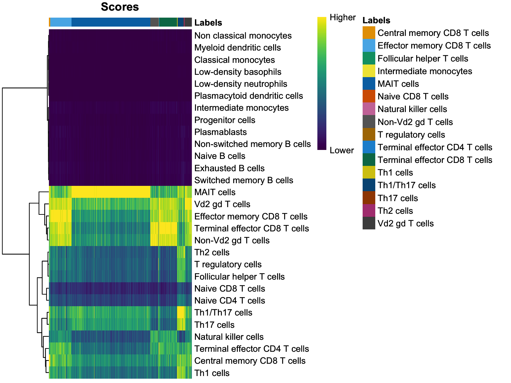
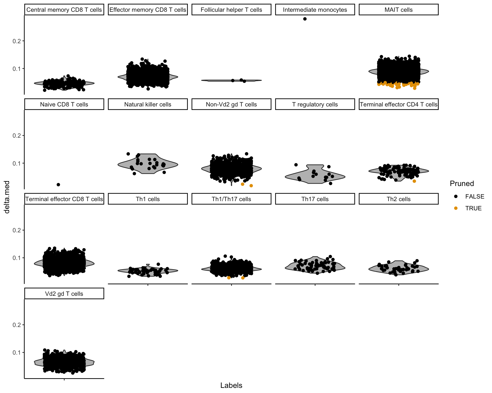
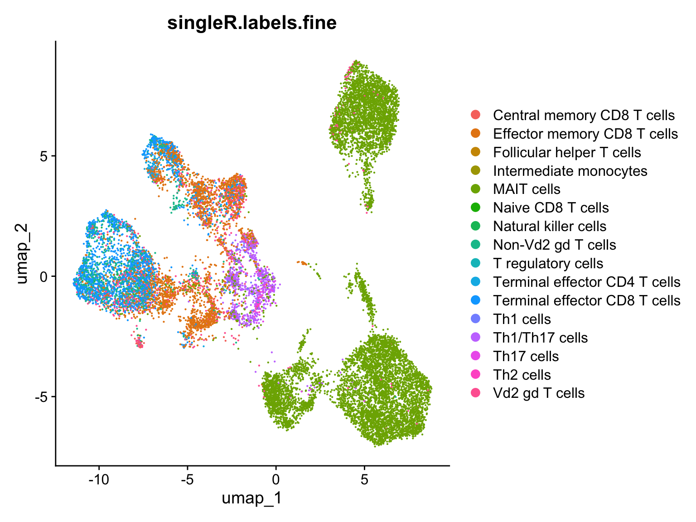
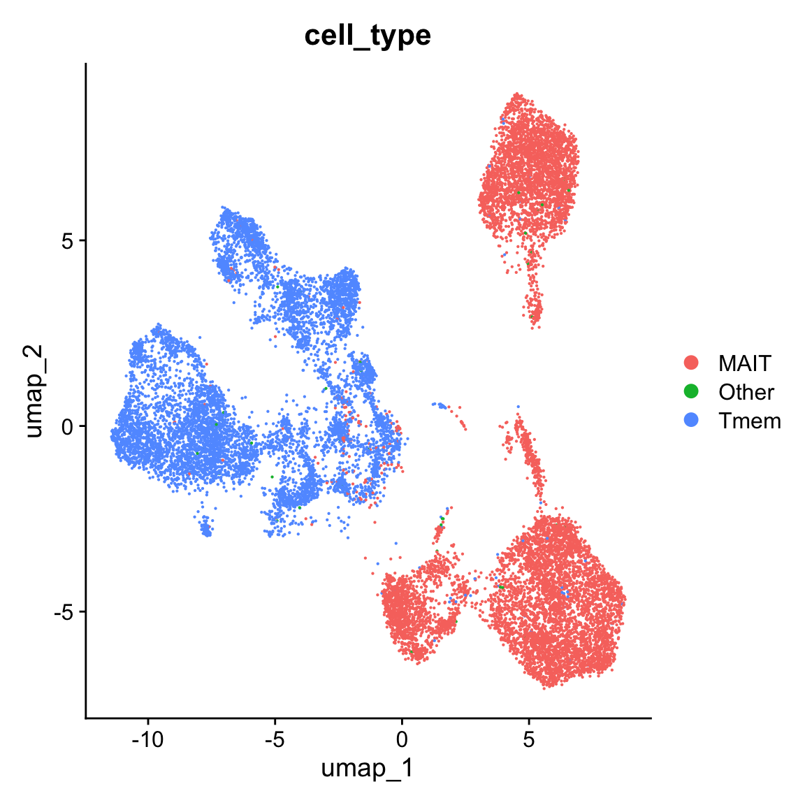

Code
getwd()[1] "/Users/osinnii/Documents/Github/scRNA-seq-workflow/Annotating_MAIT_cells_in_scRNA-seq_using_SingleR/R"This is a Quarto document which nicely combines both R code, its results and text explanation to enable an easy and interactive access for both learners, readers and supervisors to such analyses. To learn more about Quarto see https://quarto.org. By default all code lines are blended, but you can show them by clicking on the code button.
getwd()[1] "/Users/osinnii/Documents/Github/scRNA-seq-workflow/Annotating_MAIT_cells_in_scRNA-seq_using_SingleR/R"For more information about SingleR R package please visit a dedicated documentation page with all details regarding embedded functions and their usage. If you use custom packages in your publications, do not forget to cite them using the information provided at the maintainers web-site.
This analysis is to demonstrate a typical automatic scRNA-seq cell annotation procedure taking Mucosal-Associated Invariant T-cells (MAIT) as an example. For this we need a well annotated reference dataset (ref) and a query dataset where we want to annotate certain cell types. In this case our query dataset will be a recently published data by Garner LC et al, 2023 where authors used FACS-sorted T cell populations including MAIT and tissue-resident memory T (Tmem) cells for downstream analyses. Hense, this dataset already contains cell type labels derived from individually processed FACS-sorted samples serving us as a “ground truth”. But we would behave as we would have no prior knowledge of these labels and project our reference on a “blank” dataset using SingleR package.
The ref dataset is a good-maintained public sc-RNAseq dataset MonacoImmuneData containing normalized expression values of 114 bulk RNA-seq samples of sorted immune cell populations that can be found in GSE107011. Samples were additionally annotated to 29 fine cell types (designated as “label.fine” in metadata) including MAIT cells.
For this analysis we would need libraries SingleR, Seurat, and celldex.
library(SingleR) # for cell annotation functions
library(Seurat) # is needed to load our query dataset
library(celldex) # contains MonacoImmuneData referenceOur query dataset was downloaded from GEO repository, preprocessed using Seurat library and saved as an .rds file. We focus here only on RNA-expression counts and take a dataset consisting of only 2 cell types in liver tissue: MAIT and Tmem cells.
query <- readRDS("./../input/Garner.seurat.2exp.liver.mait.Trm_analyzed.rds")
queryAn object of class Seurat
19289 features across 17069 samples within 1 assay
Active assay: RNA (19289 features, 2000 variable features)
3 layers present: counts, data, scale.data
2 dimensional reductions calculated: pca, umapOur refdataset is loaded using a function directly provided by celldex package
ref <- celldex::MonacoImmuneData()
refclass: SummarizedExperiment
dim: 46077 114
metadata(0):
assays(1): logcounts
rownames(46077): A1BG A1BG-AS1 ... ZYX ZZEF1
rowData names(0):
colnames(114): DZQV_CD8_naive DZQV_CD8_CM ... G4YW_Neutrophils
G4YW_Basophils
colData names(3): label.main label.fine label.ontA SummarizedExperiment object with a “logcounts” assay containing the log-normalized expression values, along with cell type labels in the colData.
We need to get raw counts matrix from our query in order to provide it to SingleR function.
query_counts <- GetAssayData(query, layer = 'counts')And we write our prediction function in order to calculate cell type scores for each cell in our query dataset.
prediction <- SingleR(test = query_counts,
ref = ref,
labels = ref$label.fine)Now let’s quickly examine our prediction scores by looking into some build-in SingleR functions. This is a prediction score matrix listing all scores for each cell corresponding to query dataset.
prediction$scores[7:9,7:9] Low-density basophils Low-density neutrophils MAIT cells
[1,] 0.2167874 0.1900959 0.3983291
[2,] 0.2114776 0.1479493 0.3830727
[3,] 0.2156769 0.1765987 0.4072071We can see that the scores between different cell types (columns) are different for each cell (row) and before we made this visualization the SingleR algorithm assigned each cell to a certain cell type based on the ranking these scores.
Next we want to plot a heatmap based on these scores to visualize how do they look like compared to each other and whether our label scores were assigned with a high certainty (e.g. with a large “heat color” contrast between different cell types).
plotScoreHeatmap(prediction)
After that we plot so-called delta-distribution plot showing the false-positive cell label assignment rate. Each cell type projected on a query dataset is represented with a single violin plot where each cell is a dot.
plotDeltaDistribution(prediction)
After we had a close look on different visualizations of our cell label score model we might want to see what kind of spacial organization do our newly assigned cell types have. For that we need to come back to the full dataset and plot a UMAP plot grouping our cells according to new cell labels
query$singleR.labels.fine <- prediction$labels[match(rownames(query@meta.data), rownames(prediction))]
DimPlot(query, reduction = 'umap', group.by = 'singleR.labels.fine')
To check for possible biases in our MAIT cell annotation we want to plot the same UMAP representation with the “endogenous” labels from Garner et al. publication.
DimPlot(query, reduction = 'umap', group.by = 'cell_type')
ref cell label projection is accurate, since the endogenous labels mark exactly the same clusters as MAIT cellsWe have just annotated MAIT cells in a query dataset getting the label information from ref dataset with a help of SingleR package. Please note that the information provided in explanation sections may be not very accurate or exhausting.
Optionally we can check the versions of our libraries in order to be able to reproduce exactly these results in future.
sessionInfo()R version 4.3.3 (2024-02-29)
Platform: aarch64-apple-darwin20 (64-bit)
Running under: macOS Sonoma 14.3
Matrix products: default
BLAS: /Library/Frameworks/R.framework/Versions/4.3-arm64/Resources/lib/libRblas.0.dylib
LAPACK: /Library/Frameworks/R.framework/Versions/4.3-arm64/Resources/lib/libRlapack.dylib; LAPACK version 3.11.0
locale:
[1] en_US.UTF-8/en_US.UTF-8/en_US.UTF-8/C/en_US.UTF-8/en_US.UTF-8
time zone: Europe/Zurich
tzcode source: internal
attached base packages:
[1] stats4 stats graphics grDevices utils datasets methods
[8] base
other attached packages:
[1] celldex_1.12.0 Seurat_5.0.3
[3] SeuratObject_5.0.1 sp_2.1-3
[5] SingleR_2.4.1 SummarizedExperiment_1.32.0
[7] Biobase_2.62.0 GenomicRanges_1.54.1
[9] GenomeInfoDb_1.38.8 IRanges_2.36.0
[11] S4Vectors_0.40.2 BiocGenerics_0.48.1
[13] MatrixGenerics_1.14.0 matrixStats_1.2.0
loaded via a namespace (and not attached):
[1] RcppAnnoy_0.0.22 splines_4.3.3
[3] later_1.3.2 filelock_1.0.3
[5] bitops_1.0-7 tibble_3.2.1
[7] polyclip_1.10-6 fastDummies_1.7.3
[9] lifecycle_1.0.4 globals_0.16.3
[11] lattice_0.22-6 MASS_7.3-60.0.1
[13] magrittr_2.0.3 plotly_4.10.4
[15] rmarkdown_2.26 yaml_2.3.8
[17] httpuv_1.6.15 sctransform_0.4.1
[19] spam_2.10-0 spatstat.sparse_3.0-3
[21] reticulate_1.35.0 cowplot_1.1.3
[23] pbapply_1.7-2 DBI_1.2.2
[25] RColorBrewer_1.1-3 abind_1.4-5
[27] zlibbioc_1.48.2 Rtsne_0.17
[29] purrr_1.0.2 RCurl_1.98-1.14
[31] rappdirs_0.3.3 GenomeInfoDbData_1.2.11
[33] ggrepel_0.9.5 irlba_2.3.5.1
[35] listenv_0.9.1 spatstat.utils_3.0-4
[37] pheatmap_1.0.12 goftest_1.2-3
[39] RSpectra_0.16-1 spatstat.random_3.2-3
[41] fitdistrplus_1.1-11 parallelly_1.37.1
[43] DelayedMatrixStats_1.24.0 leiden_0.4.3.1
[45] codetools_0.2-20 DelayedArray_0.28.0
[47] tidyselect_1.2.1 farver_2.1.1
[49] viridis_0.6.5 ScaledMatrix_1.10.0
[51] BiocFileCache_2.10.2 spatstat.explore_3.2-7
[53] jsonlite_1.8.8 progressr_0.14.0
[55] ggridges_0.5.6 survival_3.5-8
[57] tools_4.3.3 ica_1.0-3
[59] Rcpp_1.0.12 glue_1.7.0
[61] gridExtra_2.3 SparseArray_1.2.4
[63] xfun_0.43 dplyr_1.1.4
[65] withr_3.0.0 BiocManager_1.30.22
[67] fastmap_1.1.1 fansi_1.0.6
[69] digest_0.6.35 rsvd_1.0.5
[71] R6_2.5.1 mime_0.12
[73] colorspace_2.1-0 scattermore_1.2
[75] tensor_1.5 spatstat.data_3.0-4
[77] RSQLite_2.3.6 utf8_1.2.4
[79] tidyr_1.3.1 generics_0.1.3
[81] data.table_1.15.4 httr_1.4.7
[83] htmlwidgets_1.6.4 S4Arrays_1.2.1
[85] uwot_0.1.16 pkgconfig_2.0.3
[87] gtable_0.3.4 blob_1.2.4
[89] lmtest_0.9-40 XVector_0.42.0
[91] htmltools_0.5.8.1 dotCall64_1.1-1
[93] scales_1.3.0 png_0.1-8
[95] knitr_1.45 rstudioapi_0.16.0
[97] reshape2_1.4.4 nlme_3.1-164
[99] curl_5.2.1 zoo_1.8-12
[101] cachem_1.0.8 stringr_1.5.1
[103] BiocVersion_3.18.1 KernSmooth_2.23-22
[105] parallel_4.3.3 miniUI_0.1.1.1
[107] AnnotationDbi_1.64.1 pillar_1.9.0
[109] grid_4.3.3 vctrs_0.6.5
[111] RANN_2.6.1 promises_1.2.1
[113] BiocSingular_1.18.0 dbplyr_2.5.0
[115] beachmat_2.18.1 xtable_1.8-4
[117] cluster_2.1.6 evaluate_0.23
[119] cli_3.6.2 compiler_4.3.3
[121] rlang_1.1.3 crayon_1.5.2
[123] future.apply_1.11.2 labeling_0.4.3
[125] plyr_1.8.9 stringi_1.8.3
[127] viridisLite_0.4.2 deldir_2.0-4
[129] BiocParallel_1.36.0 munsell_0.5.1
[131] Biostrings_2.70.3 lazyeval_0.2.2
[133] spatstat.geom_3.2-9 Matrix_1.6-5
[135] ExperimentHub_2.10.0 RcppHNSW_0.6.0
[137] patchwork_1.2.0 sparseMatrixStats_1.14.0
[139] bit64_4.0.5 future_1.33.2
[141] ggplot2_3.5.0 KEGGREST_1.42.0
[143] shiny_1.8.1.1 interactiveDisplayBase_1.40.0
[145] AnnotationHub_3.10.0 ROCR_1.0-11
[147] igraph_2.0.3 memoise_2.0.1
[149] bit_4.0.5